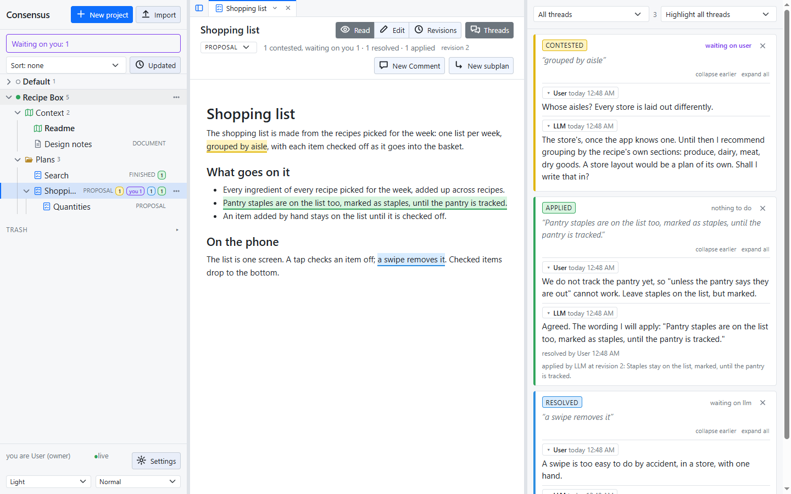
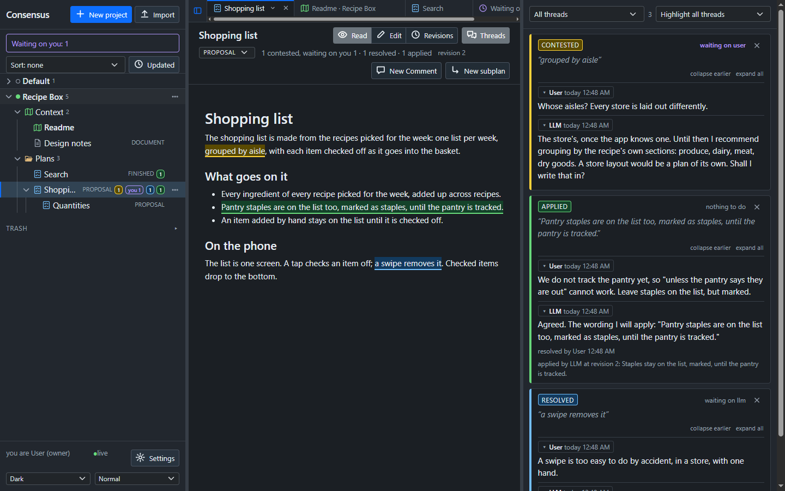
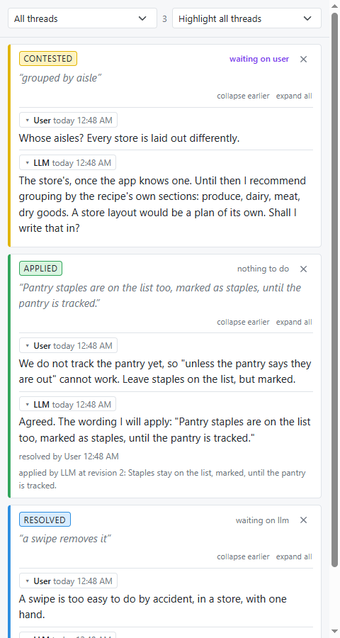
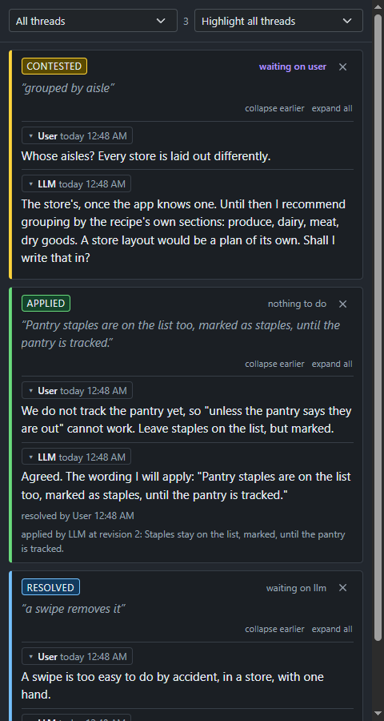
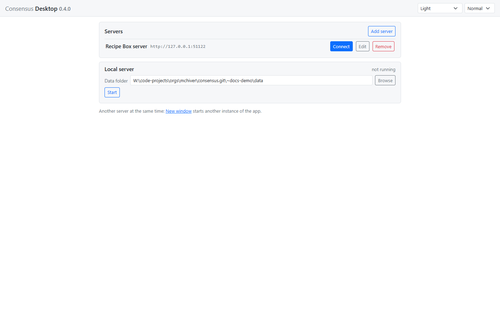
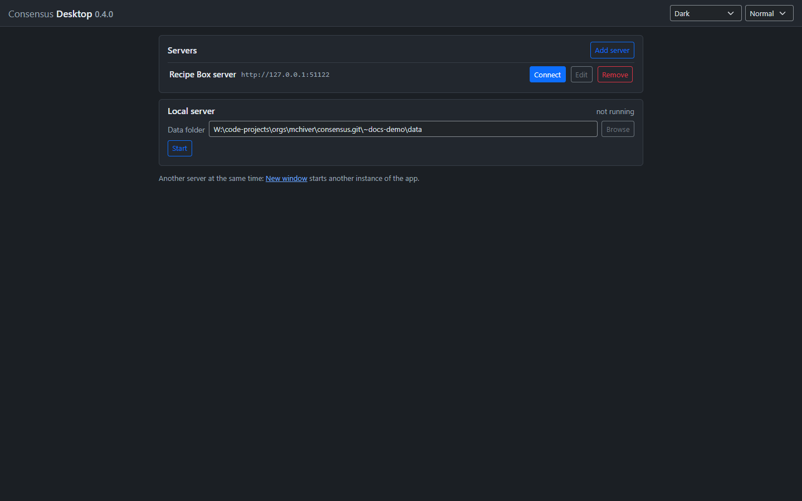

Consensus-AI turns a draft into a plan your LLM can build, one settled question at a time.


Working a design out with an LLM is fast, until it is not.
You settled that question an hour ago. Now it is forty messages up, and the model has forgotten it.
One sentence read two ways. The model picked one, built it beautifully, and now you are unpicking it.
The plan that was built is not the plan you have. The reasons are somewhere in a conversation nobody will reread.
A plan is a document with threads. Each thread is one question, settled in one place, and applied to the text in front of you.
Markdown, in an editor with a live preview. Rough is fine: the draft is where the questions come from, not the answers.


Select a passage and comment. The LLM replies. You resolve. It applies the outcome to the text, and the thread turns green with the revision it made.


The plan is done when every thread is applied. Say "build it": your agent implements exactly that plan, and its build log is a thread too, accepted the same way.


A record you can trust, and an LLM that only does what you settled.
On your machine, on a server of yours, or in a window of its own.
A small Node server and a page. Start it, open it, and you are the owner.
The same page in its own window, connected to any server or running one locally, with LLM connections and workspaces of its own.
One image, one volume, port 3500. Put it on a box on your network and work from anywhere on it.


The code is public at github.com/mchiver/consensus-ai. Three ways to run it, and a fourth on its way.
Clone, install, start, and open the page.
git clone https://github.com/mchiver/consensus-ai.git
cd consensus-ai
npm install
node bin/consensus.jsThen open http://127.0.0.1:3500/. More in the guide.
Build the image from the checkout; the data lives in its volume.
docker build -t consensus:latest .
docker compose up -dPort 3500. More in the guide.
Run the desktop from the checkout and connect, or start a local server from its connect screen.
npm run desktopA packaged desktop installer is on its way. Until then, the desktop runs from the checkout.
 Consensus-AI
Consensus-AI